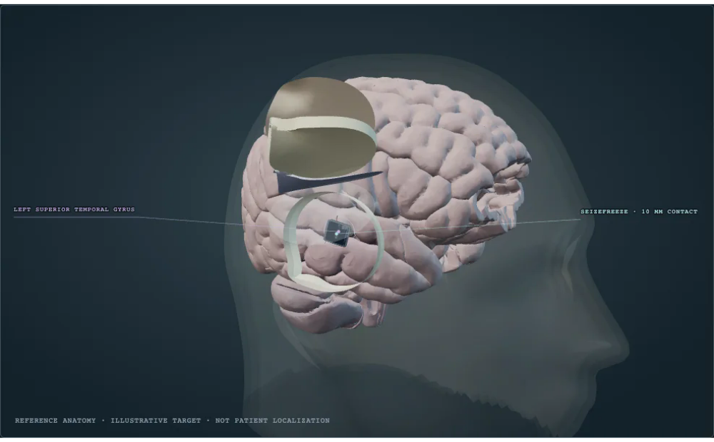

Thermal and electrical equations
Conduction, finite thermal resistance and thermoelectric energy balance provide the mathematical foundation. Values here are assumptions, not SeizeFreeze calibrations.
Ferrotec technical equations ↗CYBERPUNK REALITY
Proposed closed-loop focal cortical cooling for drug-resistant epilepsy.
Provisional patent filing (reported).
ANATOMICAL PLACEMENTDIAGRAMMATIC

Drag to rotate · Scroll to zoom · Reference anatomy; simplified access layers.
HRA anatomy · Browne & Schlehlein · CC BY 4.0 ↗
One-dimensional finite volumes mapped onto depth bands. No calculated lateral spread or affected volume.
REFERENCE PLACEMENT
Illustrative epileptogenic zone
Example cortical target. No patient-specific seizure localization.
Cortical window open. The device sits over the marked reference region.
Scalp and bone flap lift away from a simplified cranial window. Dura and arachnoid peel separately. Pia follows the cortical folds; arachnoid bridges them.
The pial-contact view illustrates an unresolved interface choice. It does not specify a surgical procedure or establish safety.
01 / BUILD THE INTERFACE
Select a component to inspect its function, connections and constraints.
Seven proposed components.
02 / SYNCHRONIZED LABORATORY
One model drives the tissue, traces and energy flows. Cooling never changes the synthetic event waveform.
Preparing the numerical model…
Illustrative controller · no clinical settings
Exploratory ranges, not therapeutic settings or tissue-safety limits. Each change recomputes the entire trajectory.
Solver starting…
SIMULATION OUTPUTS
Pause or scrub above to inspect one shared time. All plotted temperatures and powers come from the solver.
Violet: synthetic signal. Pale dashed: feature. Event timing is independent of temperature. This is not sampled device telemetry or diagnostic EEG.
Cyan: surface cell · dashed: cold plate · neutral dotted: sensor · amber: hot side.
Cyan: Qc + blue: electrical input = amber: Qh. Negative Qc means heat enters the cold plate.
Blue: actual current · dashed: request · violet band: detection. Interlock and actuator limits can prevent the requested current.
ENERGY BALANCE
The reservoir is held at an assumed 37 °C; a finite resistance limits rejection. It is a boundary condition, not a resolved chronic implant heat sink. Stored heat, perfusion, deep-boundary exchange and package leaks are included in the full ledger.
OVERVIEW / MODEL / DEVELOPMENT
SOURCES AND PROJECT RECORDS
Published cooling research motivates the question. It does not establish the safety or effectiveness of this proposed device.
Conduction, finite thermal resistance and thermoelectric energy balance provide the mathematical foundation. Values here are assumptions, not SeizeFreeze calibrations.
Ferrotec technical equations ↗Yang et al. (2002) studied Peltier cooling over the dura in anesthetized rats with chemically induced neocortical seizures. That experimental result does not predict human outcomes.
Read the primary study ↗Cyberpunk Reality proposes sensing, thermoelectric cooling and feedback. This interactive model is an educational implementation; it is not a reproduction of a validated device model or a bench experiment.
Authorship and original project record ↗Cooling rate, power, heat accumulation, chronic packaging, tissue response and detector performance need independent measurement. No patient efficacy or safety estimate is calculated here.
Full claim-to-source map ↗SeizeFreeze is a proposed closed-loop focal cortical-cooling device under concept and prototype planning. Arjan Singh Puniani: founder and device lead. Awards were received by the Cyberpunk Reality team; available records do not establish each collaborator’s engineering contribution. See the case study for competition records and the original film. A provisional patent filing is reported by the founder. Filing date and current status have not been independently verified.
Evidence, attribution and asset licenses · Reproducible model and uncertainty